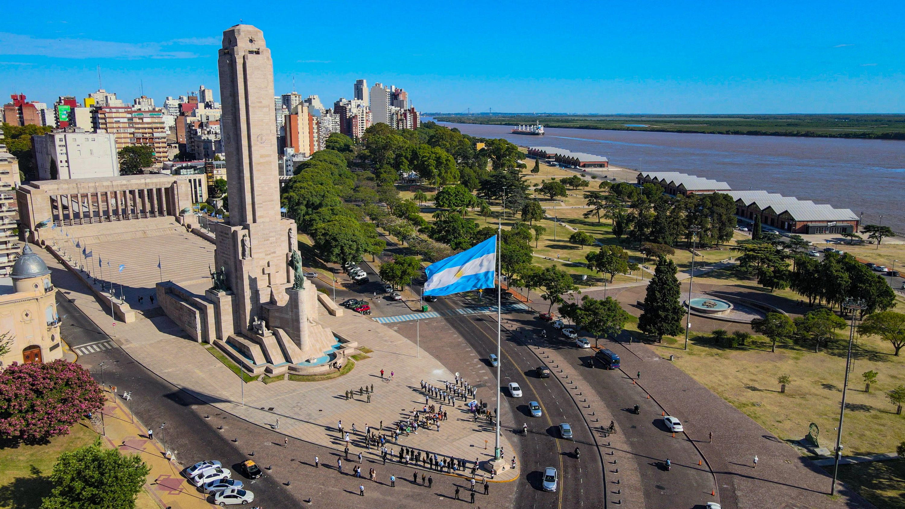

Rosario se activa: planes gratuitos y al aire libre para este fin de semana
Este fin de semana, la ciudad ofrece una agenda llena de propuestas gratuitas para disfrutar en familia o con amigos. Desde recorridos en bicicleta por el Parque Independencia hasta ferias gastronómicas en el Parque España, la combinación de cultura, naturaleza y buena comida promete atraer a vecinos y turistas por igual. El Monumento a la Bandera será otro punto destacado, con visitas guiadas, música en vivo y puestos de comida regional a su alrededor. Además, habrá espectáculos callejeros, clases abiertas y espacios de relax frente al río. La cita es ideal para quienes quieran redescubrir Rosario y aprovechar sus rincones más emblemáticos a cielo abierto.
Ver noticia